SOMMAIRE :
Les bases
Python est un language de programation créé par Guido Van Rossum.
Ce language à plusieurs avantage :
- il est gratuit
- il marche sur tous les sytèmes d'exploitation
- il est populaire, donc dévellopé. Beaucoup de forums y sont dédiés.
- c'est un language de haut niveau, donc les structures complexes sont faisables.
Pour programmer en python, les logiciels recommandés sont Jupyter, Spyder (anaconda 3) ou encore VSCodes.
•Affectation
Affecter une valeur à une variable :
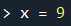
(On peut aussi affecter un mot à la variable : "mot")
•Entrer et Afficher
Pour entrer une valeur dans une fonction, on utilise input.
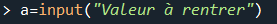
Pour afficher une valeur, on utilise print () ou pour retourner un résultat, sans l'afficher, return.
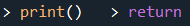
•Les Fonctions
La Fonction sert à structurer le code. C'est petit programme dans le code.
Présentation :
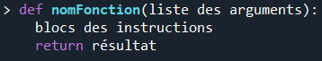
•Les modules
Les modules sont des bibliothèques de fonctions spécialisés qu'il faut importer dans le code pour les utiliser. (maths, random, ...)
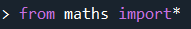
•Précondition
Les précondition
assert test une condition. Validé = ligne suivante ; Non validé = message d'erreur.
Les conditions
•Les booléens
def
Ce sont des variables qui testent une égalité (==), une différence (!=), qui compare (< , > ) et qui renvoie True ou False.
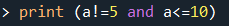
•If Then Else
If (si) est une condition. On l'écrit avec une indentation, la ligne se termine par
: et elle est suivi d'un paramètre
Else (sinon) permet de mettre un autre paramètre si le if n'est pas vérifié.
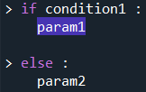
Elif (sinon) vient remplacer else lorsqu'il y'à plusieurs conditions.
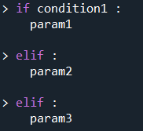
Ces instructions peuvent être condensés :
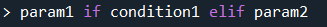
•Try Except
Try except est un précondition comme assert mais permet de ne pas forcer l'arrêt du programme.
Les Boucles
•For
La boucle for répète une suite d'instrucion un nombre de fois bien précis. Avec range, on défini le nombre répétitions de la boucle.
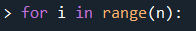
•L' itérable
Avec range, on arcourais un ensemble de valeur : range (...,...). L'ensemble arcouru avec la boucle FOR s'appelle l'itérable.
Les différents types d'itérable :
- str, pour une chaine de caractères
- list, pour une liste
- dict, pour le dictionnaire
•While
While test une condition. Si c'est True, on rentre dans la boucle, que l'on répète jusqu'à l'affcichage de False.
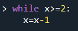
Fin du cours sur le Python. Cliquez ici pour retourner en haut de la page.